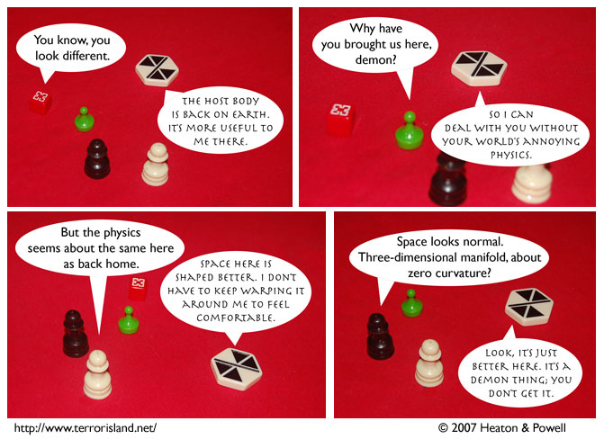

Strip #180
— Monday, August 6, 2007
Demonland’s space may not be shaped differently, but it is much more red.
Notes, Thoughts, &c.
Ben’s Notes
As we’ve seen before, not all demons on Earth warp space around themselves the way Demon-Jame does. The stool-demon, Buerzu, is mostly comfortable with earthly physics by now, and usually goes along with it to fit in. Demon-Jame is more like someone who visits a foreign country and refuses to learn any of their local customs.
Lewis’s Notes
Can’t talk. Finally got the new Harry Potter yesterday. Finishing it now.